Provenance · CSV · Raw results · Verification
All learner names share one handwritten policy; algorithms are not executed.
| Mock of | Replacement profile |
|---|---|
| cora | compound_reference |
| random | random_admissible |
| uniform_tabular | compound_reference |
| global_linear | singleton_reference |
| global_neural | compound_reference |
| compositional_modular | compound_reference |
| factorized_uniform | compound_reference |
| structure_blind_active | compound_reference |
| cora_no_confidence | compound_reference |
| cora_incomplete_graph | singleton_reference |
| greedy_swap | singleton_reference |
| organization_mdp | compound_reference |
| no_op | status_quo |
| oracle | compound_reference |
Predefined swap; frozen handwritten policy; zero training.
Simple World Comm replaces Simple Spread. SMAX, OvercookedV2 and JaxNav run their genuine upstream dynamics.
Open rendered environments, screenshots and scripted returns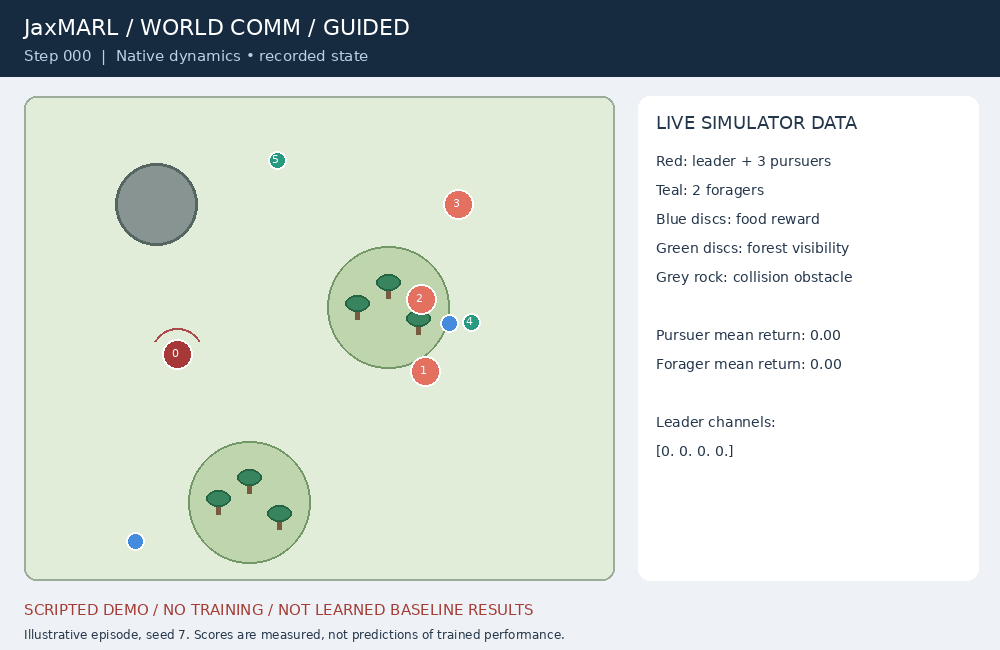
Left: status quo. Right: compound reference (privileged finite branch search).
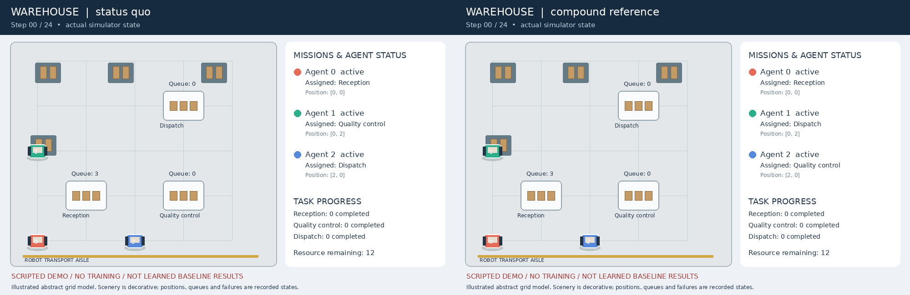
status_quo · fixed_swap · random_admissible · singleton_reference · compound_reference
Left: status quo. Right: compound reference (privileged finite branch search).
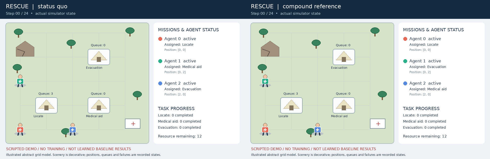
status_quo · fixed_swap · random_admissible · singleton_reference · compound_reference
Left: status quo. Right: compound reference (privileged finite branch search).
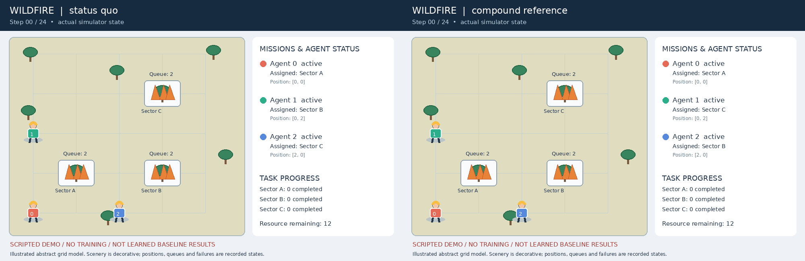
status_quo · fixed_swap · random_admissible · singleton_reference · compound_reference
Left: status quo. Right: compound reference (privileged finite branch search).
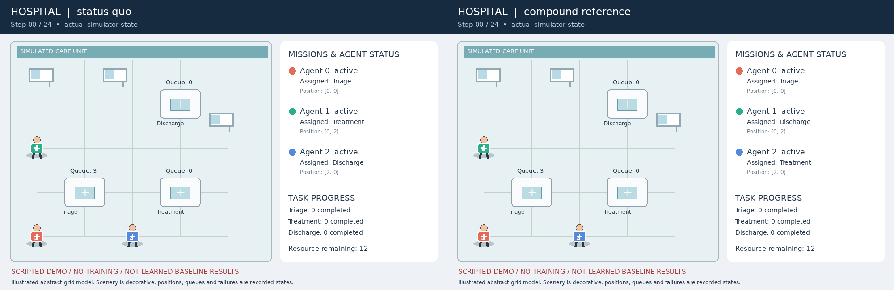
status_quo · fixed_swap · random_admissible · singleton_reference · compound_reference
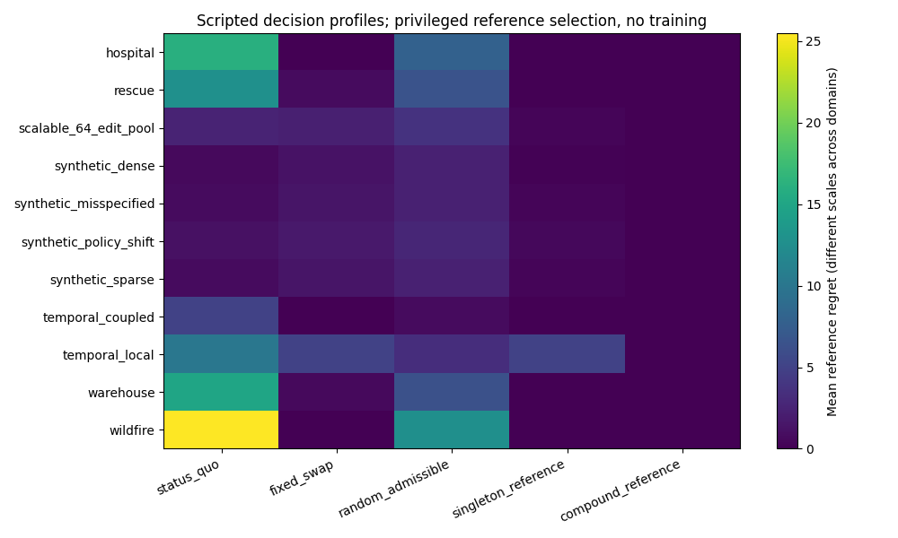
hospital
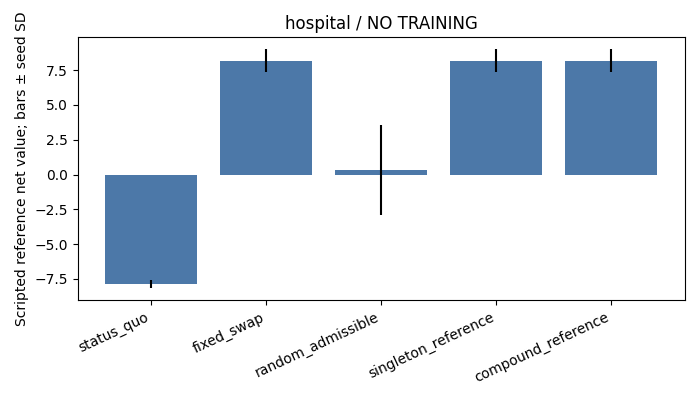
rescue
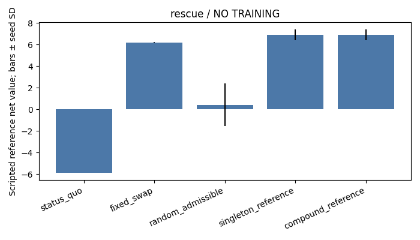
scalable_64_edit_pool
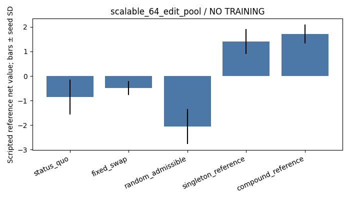
synthetic_dense
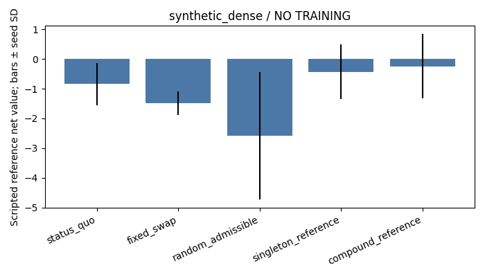
synthetic_misspecified
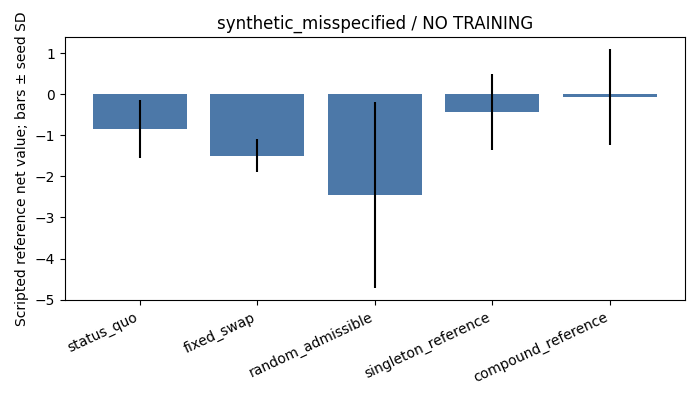
synthetic_policy_shift
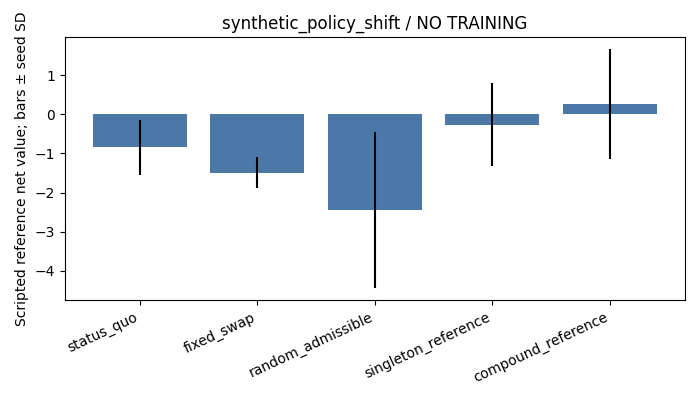
synthetic_sparse
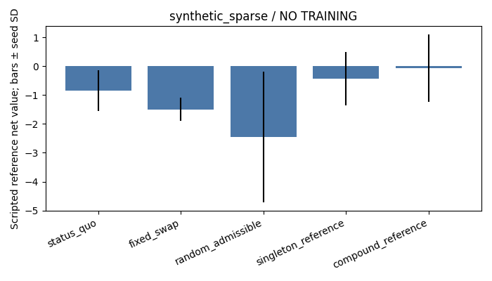
temporal_coupled
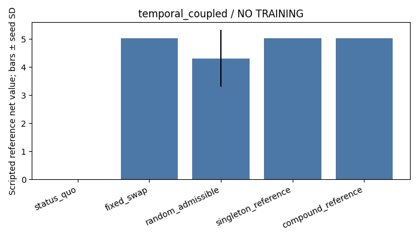
temporal_local
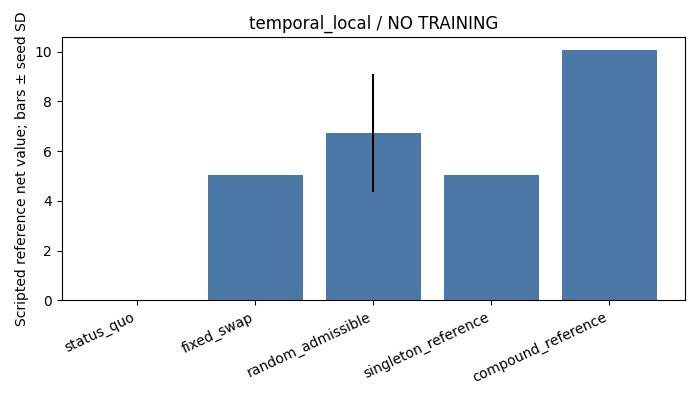
warehouse
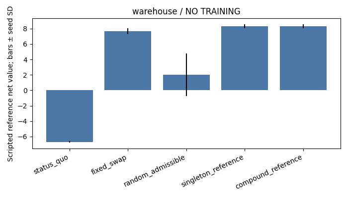
wildfire
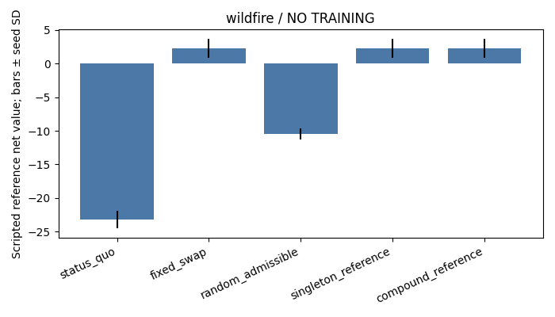